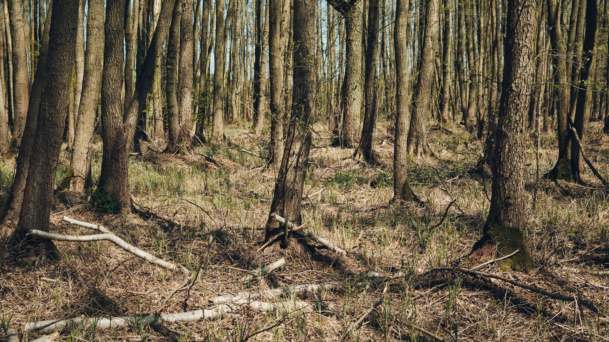
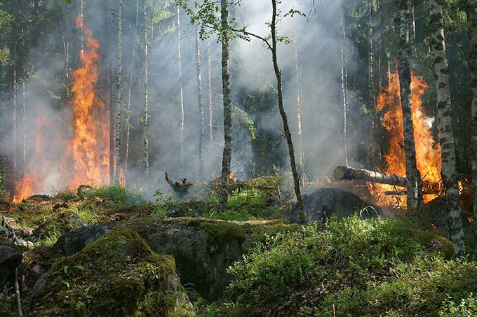
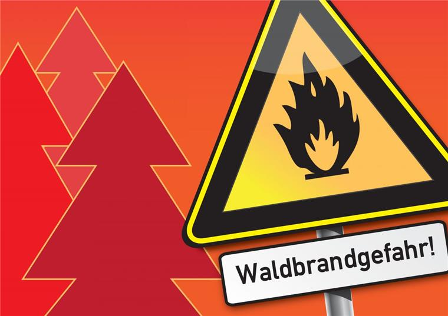
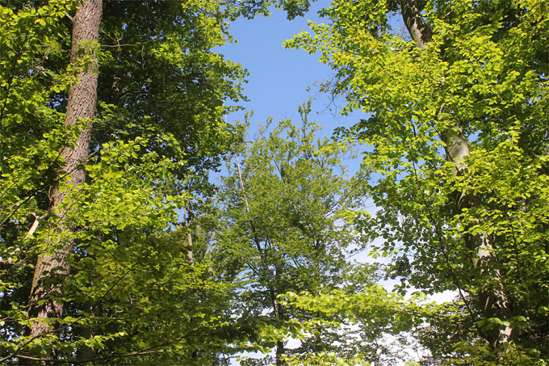

Informationen zur Trockenheit
Es ist viel zu trocken - und das sehr früh im Jahr © Alexander Paul Brandes / WWF
Wälder leiden unter Trockenheit aufgrund hoher Temperaturen und fehlenden Niederschlägen, was zu erhöhtem Trockenstress führt. Dies zeigt sich besonders in aufstrebenden Fichtenwäldern und zunehmenden Waldbränden. Die Trockenheit erschöpft die Bodenwasservorräte, was ideale Bedingungen für die Massenvermehrung von Borkenkäfern schafft. Geschädigte Fichten können sich nicht mehr mit Harz gegen die Borkenkäfer wehren, was zu einer erhöhten Waldbrandgefahr führt. Bereits die Jahre 2018 und 2019 waren außergewöhnlich trocken und heiß, wodurch 245.000 Hektar Wald zwischen 2018 und 2020 geschädigt wurden, vor allem Nadelwälder. Die absterbenden Wälder beeinflussen unser Landschaftsbild massiv, besonders in den Mittelgebirgen, und verringern die ökologische Leistungsfähigkeit der Wälder.
Ursachen und Prävention von Waldbränden
Waldbrand - Foto: Pixabay/Ylvers
Warum brennen unsere Wälder?
Sehr lange Trockenperioden, die durch den Klimawandel häufiger auftreten, begünstigen Waldbrände. Menschen verursachen jedoch viele Brände durch Fahrlässigkeit oder absichtliche Brandstiftung. Auch menschliche Eingriffe in die Natur, wie das Entwässern von Feuchtgebieten und das Anpflanzen von Forstmonokulturen aus Nadelbäumen, erhöhen die Feuergefahr.
Warum brennen hauptsächlich Kiefernwälder? Nadelstreu in Kiefernwäldern entzündet sich schneller als der Boden in Laubwäldern. Die Ansammlung von Nadelstreu wirkt wie Zunder. Menschliche Einflüsse verstärken diese natürliche Brandgefahr.
Maßnahmen zum Waldschutz:
- Förderung von Laubbäumen, da deren Streu weniger brennbar ist und sie eine hohe Wasserspeicherkapazität haben.
- Entwicklung altersgemischter Wälder mit hoher Vertikalstruktur zur Förderung von Beschattung und Feuchtigkeit.
- Erhalt von Totholz, das Schatten spendet und Wasser speichert.
- Ausstattung von Wäldern und Brandschutzschneisen mit feuersicherer Vegetation.
- Entfernung von Kiefernmonokulturen.
- Moderne Waldbrandüberwachung und spezialisierte Ausrüstung für Feuerwehren.
Erholung der Wälder: Wälder erholen sich, aber es dauert Jahrzehnte bis Jahrhunderte. Wälder könnten in Zukunft anders aussehen, wobei die Anpassung an klimatische Veränderungen wichtig ist. Naturnahe Laubwälder mit vielfältigen Strukturen sind am besten gegen Trockenheit gewappnet. Naturschutz trägt so auch zum Schutz der Wälder und der Holzproduktion bei.
Maßnahmen bei Waldbrandgefahren
Wie verhalte ich mich bei Waldbrandgefahr richtig?
1. Nicht rauchen und keine Zigarettenstummel im Wald entsorgen.
2. Zigaretten nicht aus dem Auto werfen.
3. Kein Feuer im und am Wald entzünden.
4. Grillen nur an ausgewiesenen Grillplätzen.
5. Autos auf vorgesehenen Parkplätzen abstellen, nicht auf leicht entzündbaren Flächen.
6. Auf Warnhinweise am Waldrand achten.
7. Bei hoher Waldbrandgefahr den Wald meiden.
Tipps zum Waldschutz im Alltag
Sommerlicher Laubwald - Foto: Helge May
Wie können wir den Wald schützen?
1. Sparsam mit Holz und Papierprodukten umgehen: Holz ist ein kostbarer, aber nicht unendlich verfügbarer Rohstoff. Jeder von uns sollte darauf achten, Holzprodukte bewusst zu nutzen.
2. Recyclingpapier verwenden: Deutschland gehört zu den Spitzenreitern im Papierverbrauch. Gutes Recyclingpapier erkennen Sie am Umweltzeichen Blauer Engel, das regelmäßig aktualisiert wird.
3. Auf das FSC-Siegel achten: Dieses Siegel garantiert, dass Holzprodukte umwelt- und sozialverträglich hergestellt wurden. Fragen Sie beim Kauf nach FSC-zertifizierten Produkten.
4. Patenschaften übernehmen: Unterstützen Sie durch Patenschaften beim Schutz der Wälder.
5. Den Wald erlebbar machen: Informieren Sie sich über den Wald und seine Bewohner. Nur was man kennt, kann man auch schützen. Engagieren Sie sich in lokalen Gruppen oder Projekten.